Tech Stack
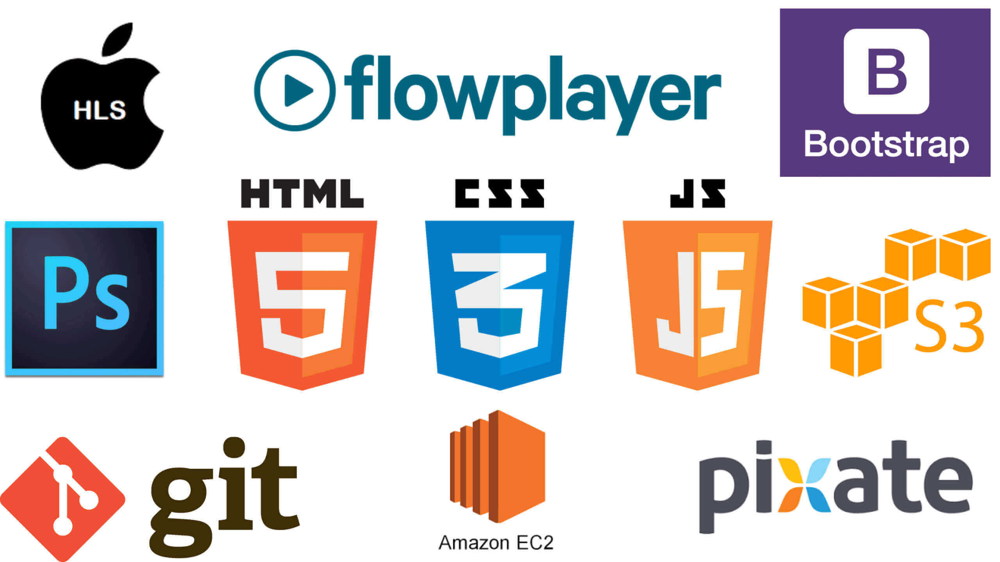
An Online Dance Academy
The 2016 summer internship at RnM Moving Pictures was a highly productive internship. Being a Product Development Intern I was involved in brainstorming sessions, strategical meetings and was a key member in contributing ideas and inputs which resulted in solving technical issues and also the launch of 'Book Your Trainer' vertical.
During the 3 months of my internship I worked on -
1) HLS Streaming Protocol
- I worked on video optimization and rendering via HLS and integrated Flowplayer - a minimalistic full-featured HTML5 & Flash video player. Along with Flowplayer, I also experimented with videojs and similar libraries. I developed robust video processing
systems for rendering and playing M3U8 files that were directly served from CDN.
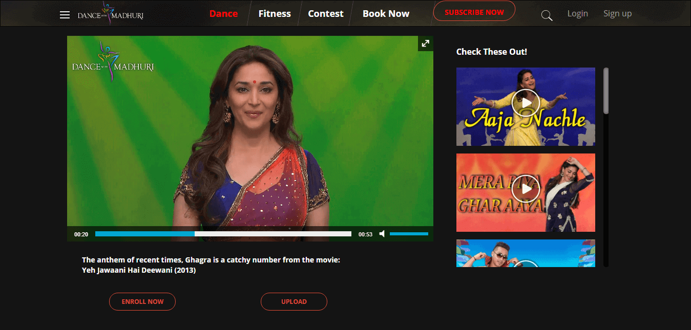
2) UI mockups and Redesigning the DWM Interface.
- My internship started off with redesigning the user interface and giving a visual overhaul to the entire Dance With Madhuri Website. I created various mockups and design prototypes of every single page and generated a user flow mechanism for a
smooth user experience. The UI was redesigned to be cross-platform and was optimized to function on mobile and tablets. This experience allowed me to explore my creativity and design thinking in order to design user specific experiences and
interfaces to create and deploy an exquisitely appealing product.
- Home Page
Redesigned page consists of a hamburger menu which entitled to cluster all categories under one menu.
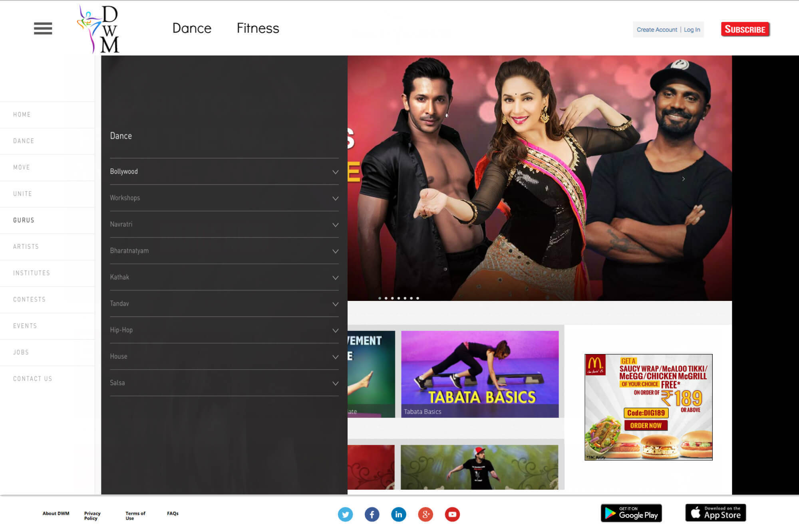
- Learn Page
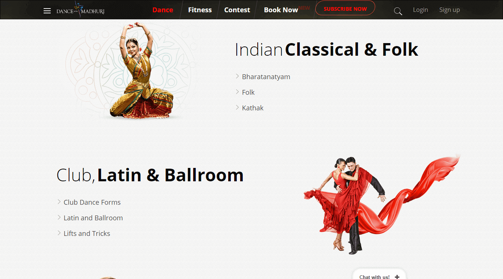
Redesigned page made browsing experience faster and removed an additional layer of clickability.
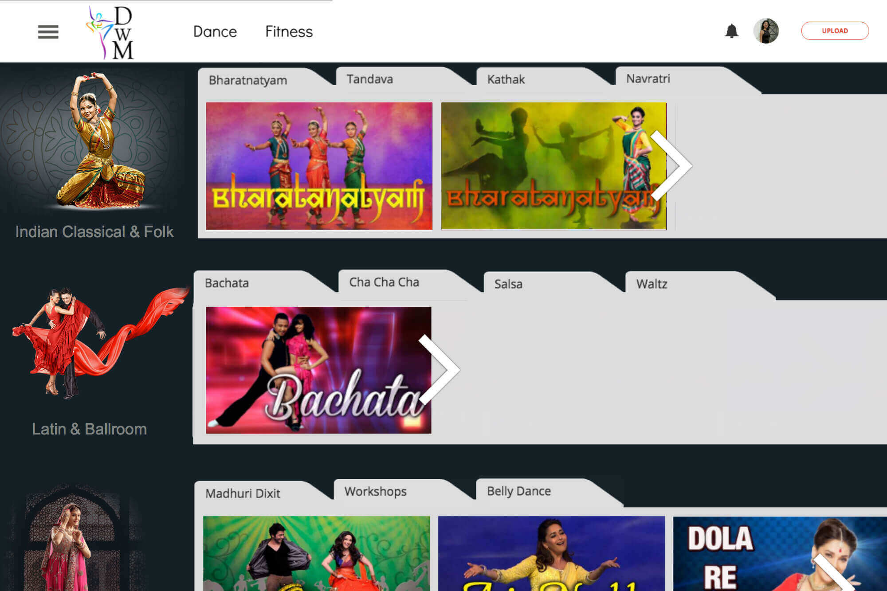
- Video Page
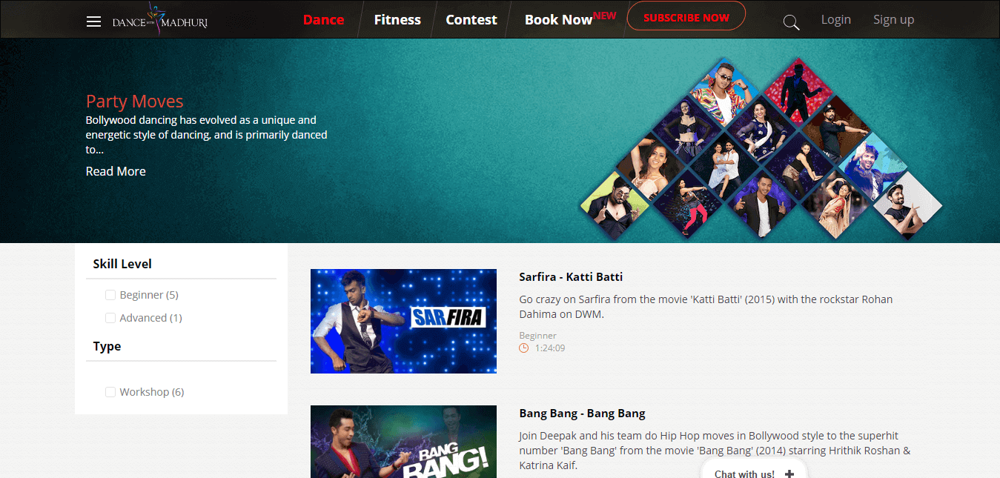
By adding on-hover text on video thumbnails and aggregating all the wiki information in a single column, the new design is much cleaner without curtailing important information.
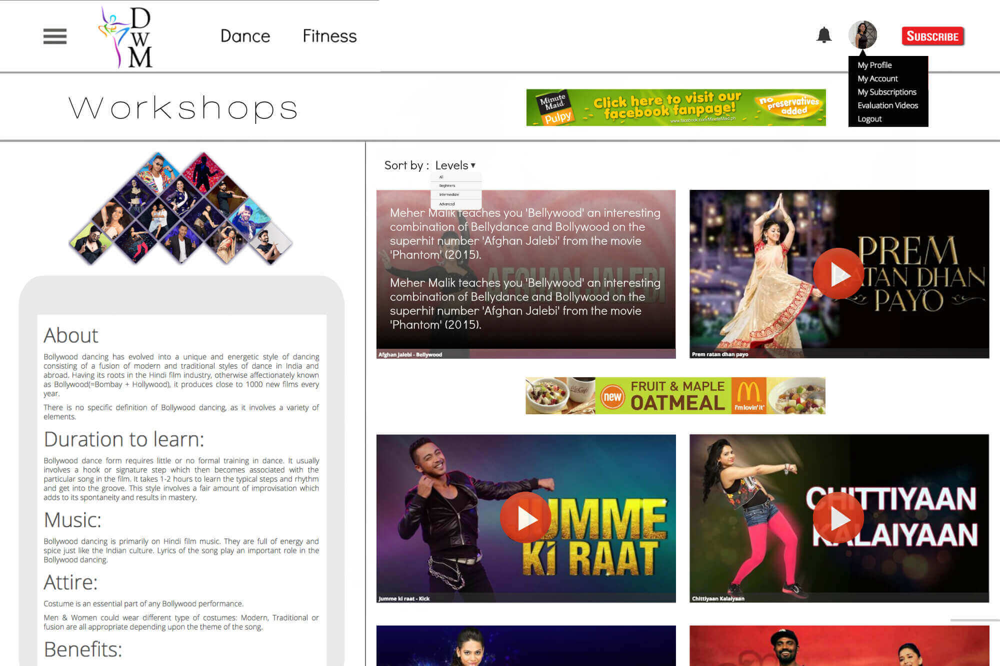
- Profile Page
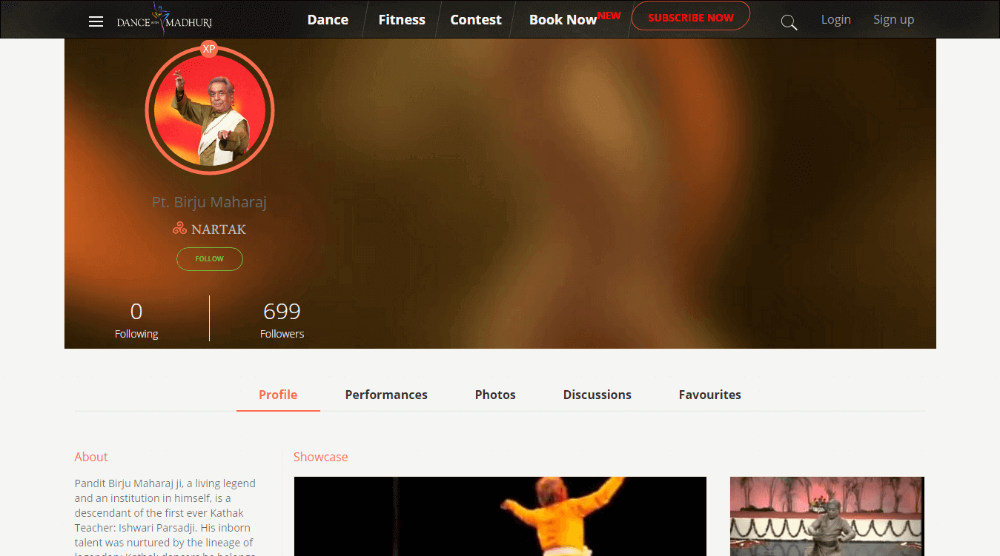
Redesigning the profile page was about adding tabular sections which define each element uniquely that added
a uniform layer of expressing information in comprehensible fashion.
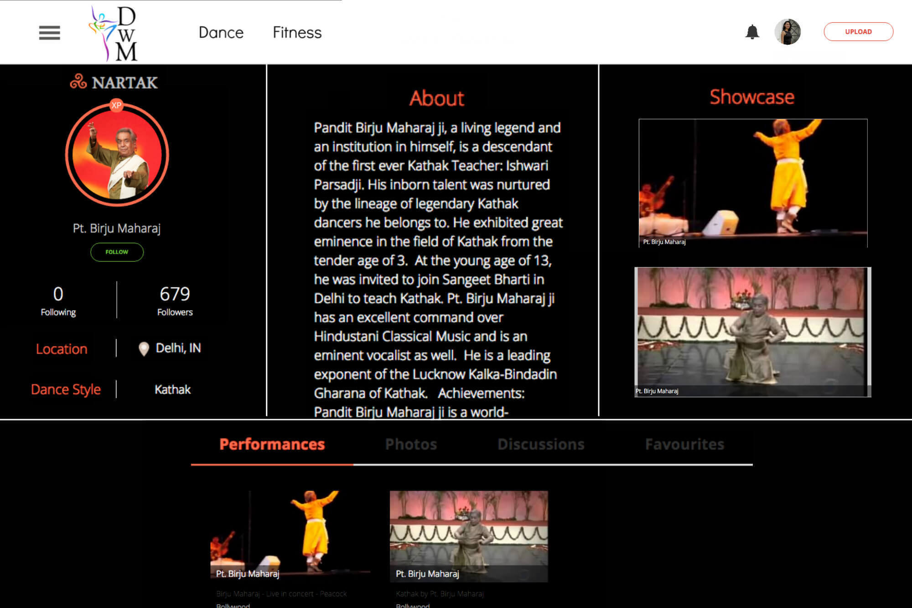
3) Launched Version 2.0 Of Company's Official Website.
- What started as a general discussion turned into a side project to be completed in 2 weeks. We developed a new
version of RnM Moving Pictures company website giving it a fashionable and a modern look. The site is developed
using
Twitter's Bootstrap Framework and is hosted and deployed on AWS. We were successful in meeting the 2 weeks deadline
in order to make the site live. Check out RnM Moving Pictures.

4) Developed and Launched 'Book Your Trainer' Service.
- Book Your Trainer is an off-ground service offered by Dance With Madhuri. With Book Your Trainer you can
personalize your dance experience by booking a dance or a fitness trainer according to your convenience and needs,
anywhere,
anytime. My role while developing this service was to architect the service model and build front-end prototypes. My
responsibilities also include designing and structuring the Book Your Trainer proposition and shipping the
product to make it live on the website. Book Your Trainer was shipped during my 3 months internship period and is
now live and integral part of Dance With Madhuri.
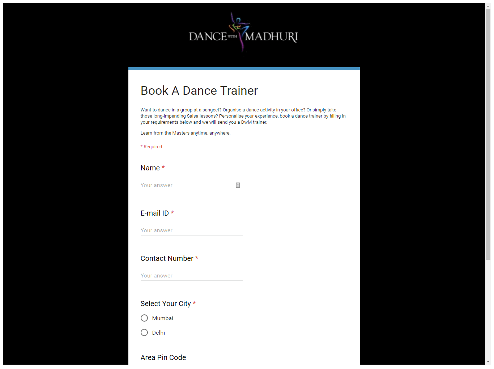
5) Design and Developed New Subscription Model
- Fabricated new subscription plans and pricing table. Designed and developed the subscription page interface along
with geo-filtering for displaying pricing currency based on location.
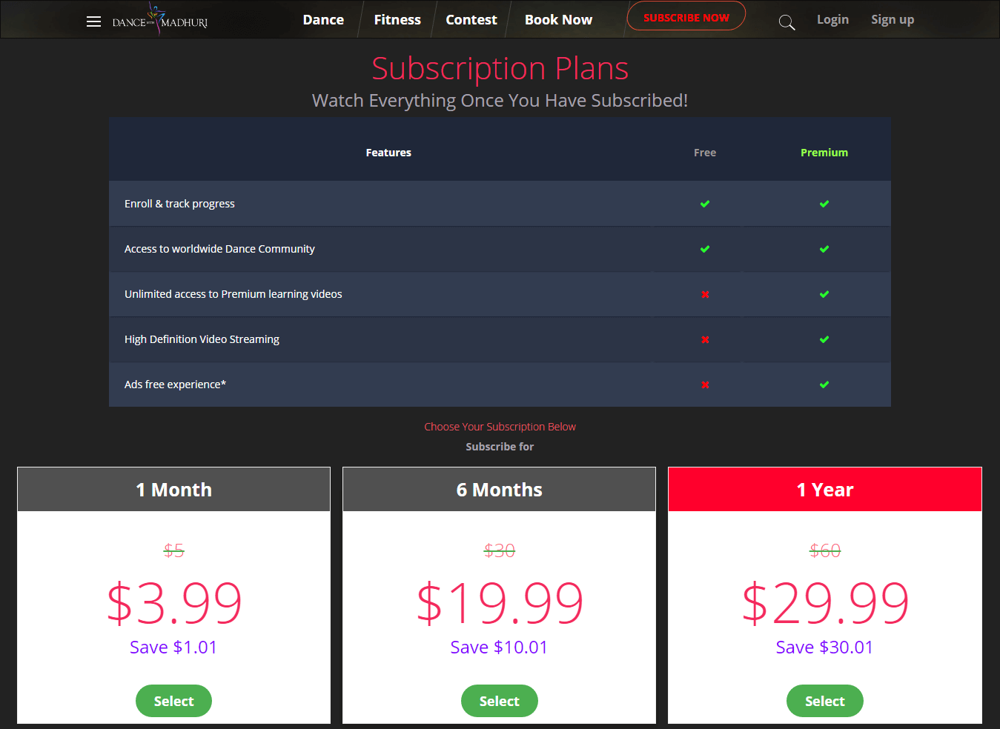
Besides all this, I also provided customer support on Dance With Madhuri's Facebook Page, wrote Bollywood Trivia Content and before shipping anything or making any product live did meticulous product quality checks.